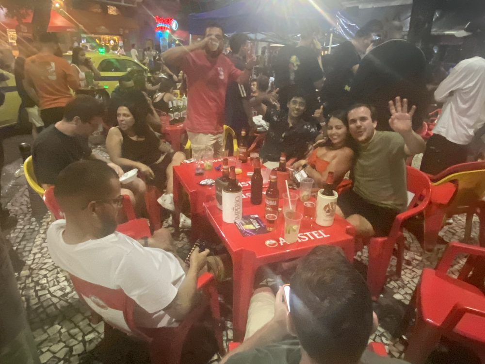
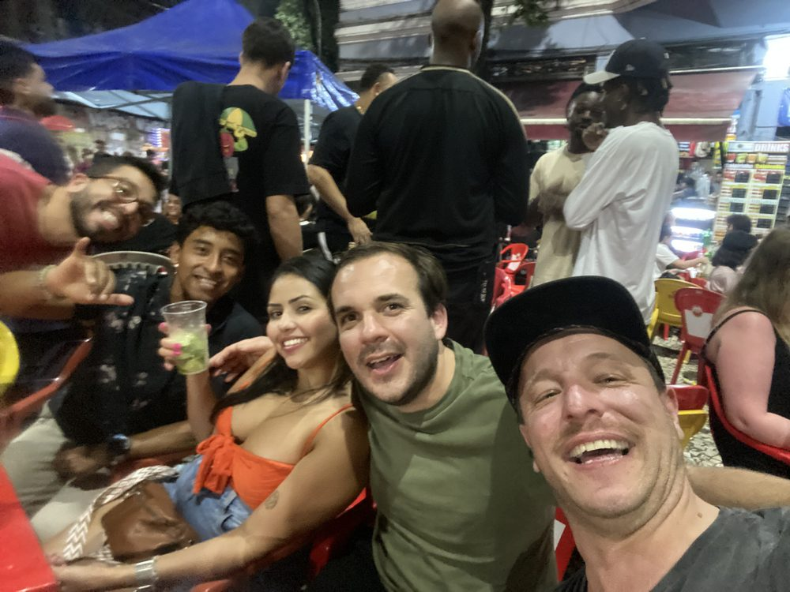
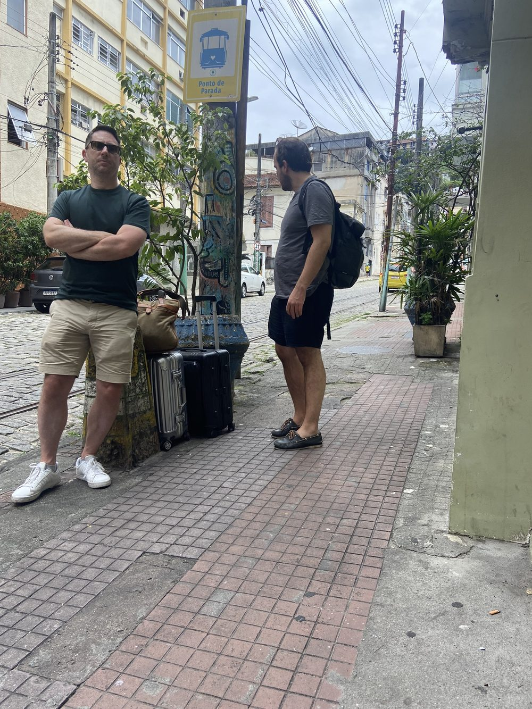
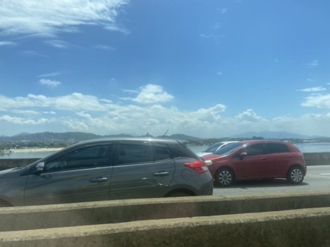
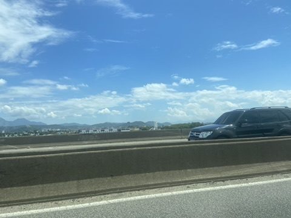
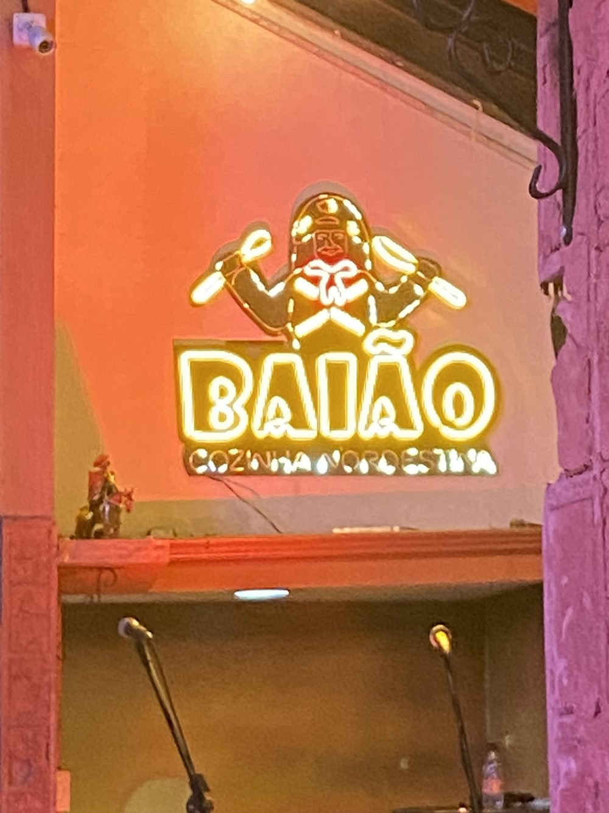
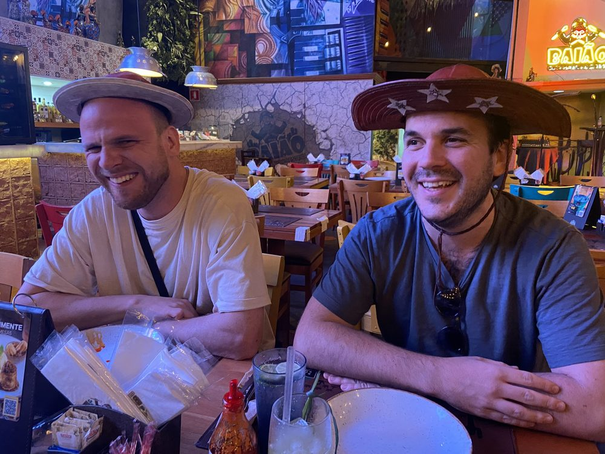
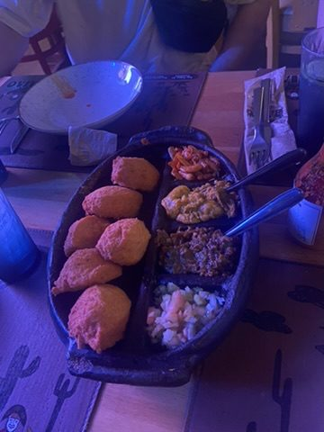

Long night in Lapa: Saturday night in Lapa means plastic chairs on the street, caipirinhas and music until morning.


On to São Paulo: Luggage on the pavement, out of Rio on the Linha Vermelha and about 430 km along the Via Dutra to São Paulo. In the evening in Pinheiros: north-eastern food at Baião, named after the music style made famous by Luiz Gonzaga.





